The content of this page is probably more relevant for the person who will do the administration of Möbius or will be called upon to resolve bugs in questions, assignments, ... Nevertheless, there may be some information useful to the instructors who are more adventurous.
If you select the item List Classes under the drop down menu Class Manage at the top of the display, then you will get a display similar to the one below.
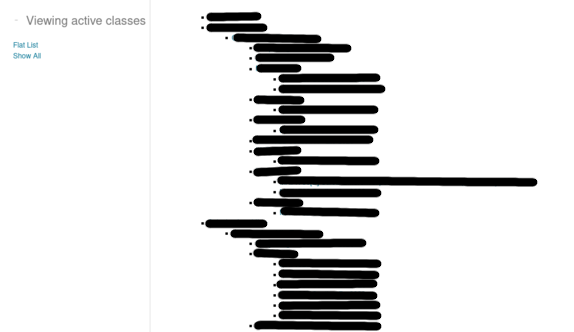
Each course inherits all the questions and assignments of its parent, grant-parent, ...
If you select the directory Assignments after having accessed the Content Repository, then you get a display like the one below. In the example below, we also selected the subdirectory Default Unit.
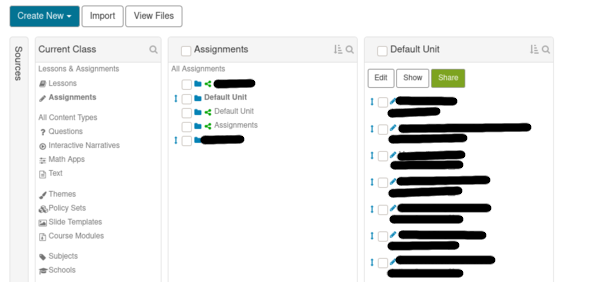
There is no more directory level under Assignments.
The directories marked by the green share symbol in front of the directory name are owned by the parent, grand-parent, ... of your course. You can use any of the assignments already existing in the directories of the parent, grand-parent, ... of your course. To some extend, you automatically inherits a copy of the initial assignment that was created in the parent, grand-parent, ...
When students access an assignment, they get a copy of all the questions of the assignment. It is the same questions that will be used to create new version of the assignment if they request one. Therefore, if you modify a question of an assignment after students have started it, then your modifications will not be reflected in the question of the student's copy of the assignment. Even if students ask for a new version of the assignment, the question will still be generate from their copy of the question before you modified it. Only the students who had no started at all the assignment will get the question that you have modified.
When you think about it, this philosophy makes perfectly good sense. You do not want all the assignments, that are using or have used the question that you are about to modify, to be also modified. It is particularly important if it is a question that many courses have inherited. By modifying a question, you would then be able to modify the assignments in other courses.
If you select the directory Questions after having accessed the Content Repository, then you get a display like the one below. In the example below, we also selected the subdirectory Integrals.
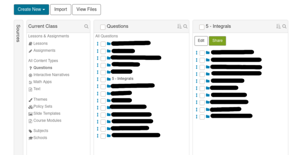
You can create as many level of directories as you want under the directory Questions. You are not limited to one level like for Assignments.
While you can edit an assignment that you inherited from the parent, grand-parent, ... to your course, it is not so for the questions. You cannot edit inherited questions. If you want to modify an inherited question, then you have to clone it to get your own copy of the question that you can edit as you wish.
Detailed instructions to export questions and assignments to a zip and to import zip files to a course can be found in the section aimed at the user who are not interested in the fine details of the Möbius directory structure.
You may want to export questions or assignments from one course to the other. I assume for this discussion that you own two courses that do not have a common parent or, if they have a common parent, you do not own it.
Suppose that you have the following directories of questions in your Content Repository.
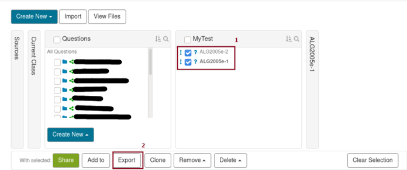
Moreover, suppose that you want to export the questions ALG2005e-1 and ALG2005e-2.
First check the box in front of the name of each question (item 1 in the figure above). A menu will appear at the bottom of the screen after you select a question.
Then click on Export (item 2 in the figure above). You will get a popup window similar to the following one to confirm that you want to download the zip file to your computer.
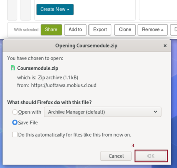
By default, the questions that you have selected are stored in the zip file Coursemodule.zip. The questions are in xml format. If you select only one question, then Möbius will use the title of the question as the name for the zip file. You only have to click on OK (item 3 in the figure above) to complete the operation. The zip file is saved in the directory on your computer used by your browser when it downloads files.
To import the question to your other course, you open the Content Repository of the other course.
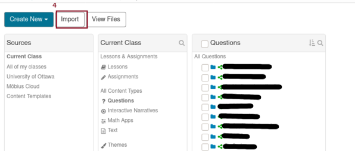
Click on Import (item 4 in the figure above) to get the following popup window to select the zip file that you want to import.
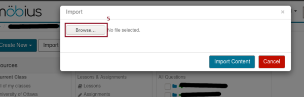
Click on Browse (item 5 in the figure above) to select the file that you want to upload to your course. In the present example, we have selected our zip file Coursemodule.zip.
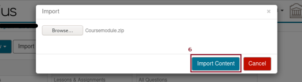
Then click on Import Content (item 6 in the figure above) to upload the zip file with the questions to your course. You get another popup window to confirm that the file has been uploaded successively.
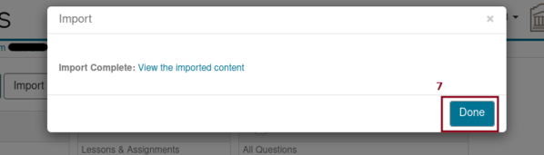
You can select to view the imported question or you can simply click on Done (item 7 in the figure above) to end the importation procedure. By default the questions that you have imported are in the root directory of the Questions in the Content Repository.
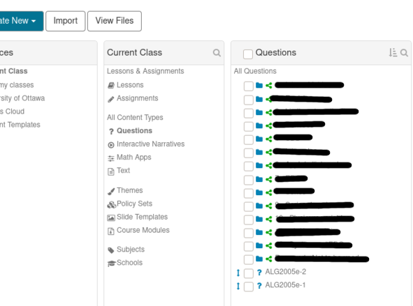
The procedure to export and import assignment is very similar to the procedure to export and import questions but done from the directory Assignments of the Content Repository. There are however some differences in the outcome of the procedure. When you export an assignment, you also export all the questions that are part of the assignment. So, when you import the assignment into another course, you also import all its questions with it. The assignment will be in the folder Default Unit of the directory Assignments in the Content Repository. All the questions will be in the root directory of the directory Questions in the Content Repository. This is consistent with the philosophy that assignments have their own copies of the questions.
Add to Suppose that you want to move the questions that you have just uploaded to a subdirectory of your directory Questions in the Content Repository. To do that, you proceed as it follows.
Click on the Add to button (item 1 in the figure below) at the bottom of the window after you have selected the questions that you want to move.
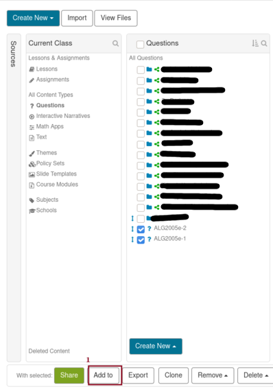
You get the following popup window.
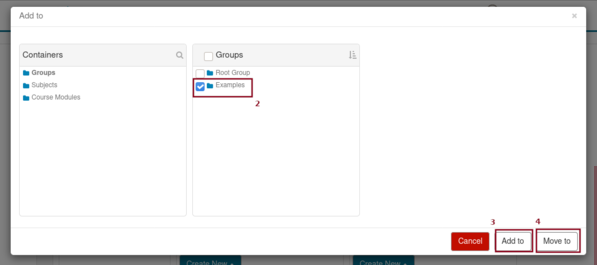
Select the subdirectory of the Questions directory where we want to move the selected questions. The Root Group is in fact the Questions root directory.
Suppose that you want to move the questions to the subdirectory Examples, you just have to check the box in front of the directory name (item 2 in the figure above) and click on Move to at the bottom right corner of the display (item 4 in the figure above). You get another popup window to confirm that the move has been done.
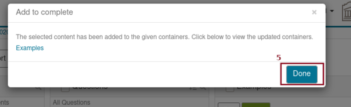
Click on Done (item 5 in the figure above) to complete the transfer.
addresses in the
Questions directory. You could then use any of
the addresses of a question to edit it and even
delete it. Be careful, deleting a question using
one address will delete the question and
the other address. The question is really lost.We have mentioned cloning questions several times in the previous sections. There is not a lot to say about it though is is a really important feature of Möbius. As we said earlier, copying a question using the Add to button at the bottom of the display is not doing what you are used to when copying a file. You do not get a new copy of the question but only a new link to it. If you want to get a copy that you can modify without damaging the original question, then you have to Clone it.
Suppose that you have selected a question (item 1 in the figure below) like in the figure of the Content Repository below.
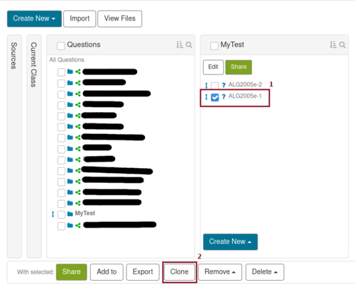
After having selected a question, a list of buttons appear a the bottom of the screen. One of them is the button Clone (item 2 in the figure above). If you click on this button, then you get the following popup window confirming the success of the operation.
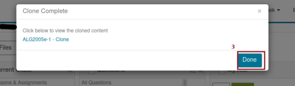
The text - clone is appended to the title of the questions that you you have cloned. You can click on the name of the cloned question to edit it, or you can click on Done (item 3 in the figure above) to return to the Content Repository.
Suppose that you click on Done (item 3 in the figure above). You will first notice that the question does not seem to appear any where. You have to refresh the display. One way to do it is to reload the Content Repository. After that you get the following display.
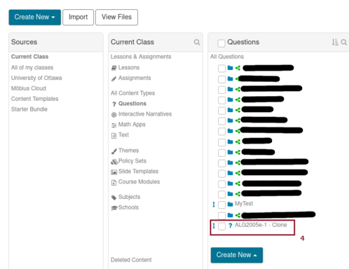
The cloned question (item 4 in the figure above) is located in the root directory of the Questions. You may used Add to to move it to the directory of your choice and then edit it.
Everything that we have just said for the questions apply to the assignments. The only difference is that, after having been cloned, assignments are stored in the directory Default Unit (item 5 in the figure below) of the Assignments directory in the Content Repository.
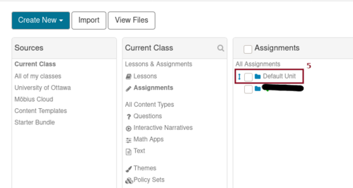